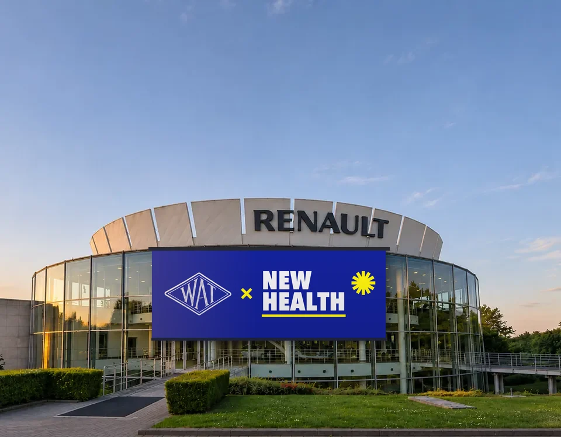

Peers with the same problems
A group of founders where you can ask what you can't ask anywhere else: a good regulatory consultant, a medical advisor, wording that holds up, a hire. The answer comes from someone who has been through it.
The movement
“Everyday health,
finally taken seriously.”
New Health brings together the founders of startups that look after everyday health (sleep, digestion, skin, hormones, energy, mood) and stay with people over time. Each works on a specific problem, and all of them are heading in the same direction.
A network of health startups · launched in Paris on 25.11.2026
The movement
Today, health is caught between two extremes. On one side, medicine that waits until you are really ill before it steps in. On the other, longevity, which promises extra years to people who are already well.
In between, tens of millions of people sleep badly, struggle with their digestion, their skin, their energy or their hormones, and are told to learn to live with it. A generation of digital, specialised startups is stepping in to look after them. New Health is the name they've chosen together.
What it is
Why join
Building a startup in this space raises questions the rest of tech never has to answer: how to talk about health without overpromising, how to rely on science and work with doctors, how to earn the trust of people who have been looking for answers for years. Until now, every founder faced them alone.
A group of founders where you can ask what you can't ask anywhere else: a good regulatory consultant, a medical advisor, wording that holds up, a hire. The answer comes from someone who has been through it.
A stage at every event, the whole network behind you when you launch something, and posts shared by every company in the network. Paris drew more than 350 sign-ups for a single evening.
Every company brings its investors, partners and journalists. At the events, you meet in one evening people it would otherwise take months to reach.
New Space and New Food gave investors, the media and the public a word for what was happening. New Health does the same for everyday health: no founder has to explain the category from scratch anymore.
The manifesto
We don't ask “how many more years?” We ask “how are you today?”
You were told to learn to live with it. We refuse to accept that.
We don't replace your doctor. We work with doctors, and we hand back to them as soon as they need to step in.
Events
Any member can host one, in their city, in their format, on their theme. Every event is announced here and shared by the whole network.
One stage, 4 to 5 companies in the spotlight, investors, doctors and press in the room.
One member shares what they have learned, the others bring their questions.
One table, one city. What's said at the table stays there.
Thirty minutes on video: a launch, a fundraise or a failure, told by a member.
The manifesto presented in public for the first time by Nicholas Balon-Perin (Symp), followed by a panel moderated by Charlotte Calvet Granet (Longevity Culture Club) with Sophie Agosta (Kor), Gwen Le Calvez (Annette) and Maud Pasturaud (MenoClinic). Drinks afterwards.
A full day at WAT Garage, a round glass Renault showroom in Brussels, for the founders, investors and doctors building Europe's health companies. Top keynotes on one stage from people who've built health companies in Europe, and time to meet in between.

Are you a member who wants to run a workshop, a breakfast or the next flagship edition? Tell us: we'll help you organise it, it gets announced here, and the network fills the room.
The companies
The list grows with every accepted application.
At-home testing and long-term support for people whose digestion weighs on their everyday life. The company that started the movement.
Prevention that starts from each person's own markers, to act before a problem settles in.
Long-term weight and metabolism support, wherever you live.
A pathway designed for women in perimenopause and menopause, wherever they live.
If it meets the five criteria, it belongs here.
Entry criteria
A company can co-sign the manifesto if it meets all five. No fee, no formal commitment.
Its customers come for an issue that bothers them today (digestion, sleep, weight, hormones, skin, fatigue, mood) and isn't well handled elsewhere, or to stop a problem from setting in.
Its approach is based on the person's own data (measurements, questionnaire, history) and on studies, not on an average.
It builds a plan and adjusts it as their situation changes.
Everything can be done wherever you live.
A doctor has validated the protocol the product is based on.
Join
If your company meets the five criteria, you co-sign the manifesto, join the founders' group and take your place alongside the other companies in the network.
Answer in a few sentences, with figures and names where you can.
The ecosystem
Investors, doctors, brands, media, venues: New Health is also built with the people around the network's companies. Tell us what interests you and we'll get back to you.
Who you are, your organisation, and what you would like to do with the network. You can pick several options.
Open the form